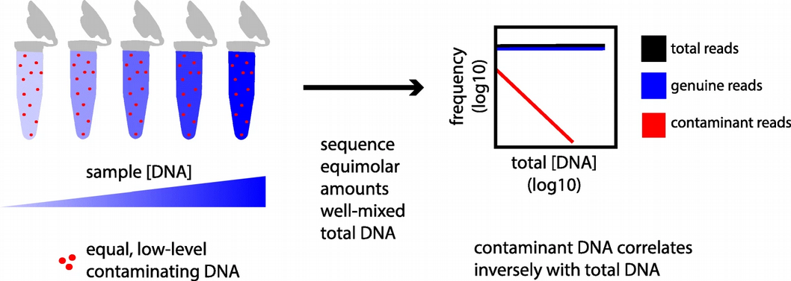
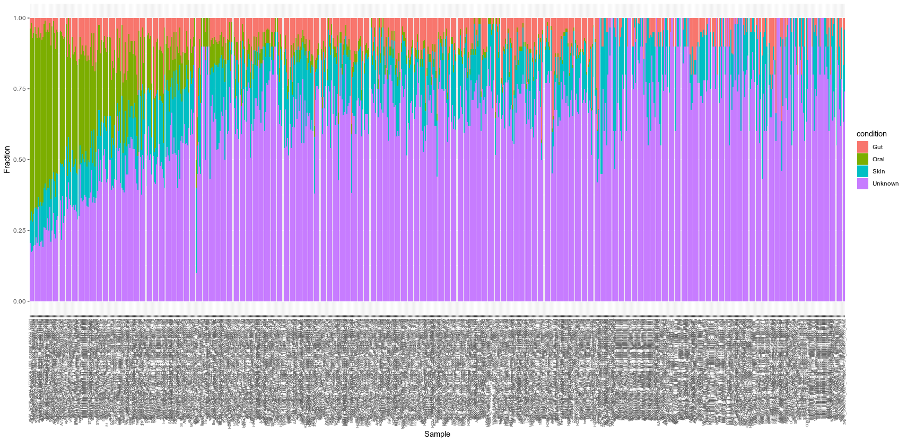

13 Decontamination and authentication analysis
For this chapter’s exercises, if not already performed, you will need to create the conda environment from the yml file in the following archive, and activate the environment:
conda activate decontamination-authentication13.1 Introduction
In ancient metagenomics we typically try to answer two questions: “Who is there?” and “How ancient?”, meaning we would like to detect an organism and investigate whether this organism is ancient. There are three typical ways to identify the presence of an organism in a metagenomic sample:
- alignment of DNA fragments to a reference genome (Bowtie, BWA, Malt etc.)
- taxonomic (kmer-based) classification of DNA fragments (Kraken, MetaPhlan, Centrifuge etc.)
- de-novo genome assembly (Megahit, metaSPAdes etc.)
The first two are reference-based, i.e. they assume a similarity of a query ancient DNA fragment to a modern reference genome in a database. This is a strong assumption, which might not be true for very old or very diverged ancient organisms. This is the case when the reference-free de-novo assembly approach becomes prowerful. However, de-novo assembly has its own computational challenges for low-coverage ancient metagenomic samples that typically contain very short DNA fragments.

While all the three types of metagenomic analysis are suitable for exploring composition of metagenomic samples, they do not directly validate the findings or provide information about ancient or endogenous status of the detected organims. It can happen that the detected organism 1) was mis-identified (the DNA belongs to another organism than initially thought), 2) has a modern origin (for example, lab or sequencing contaminant), or 3) is of exogenous origin (for example, an ancient microbe that entered the host post-mortem). Therefore, additional analysis is needed to follow-up each hit and demonstrate its ancient origin. Below, we describe a few steps that can help ancient metagenomic researchers to verify their findings and put them into biological context.
13.2 Evennes of coverage
Concluding organism presence by relying solely on the numbers of assigned sequenced reads (aka depth of coverage metric) turns out to be not optimal and too permissive, which may result in a large amount of false-positive discoveries. For example, when using mapping to a reference database, the aligned reads may demonstrate non-uniform coverage as visualized in the Integrative Genomics Viewer (IGV) below.

In this case, DNA reads originating from another microbe were (mis-)aligned to Yersina pestis reference genome. It can be observed that a large numer the reads align only to a few conserved genomic loci. Therefore, even if many thousands of DNA reads are capable of aligning to the reference genome, the overall uneven alignment pattern suggests no presence of Yersina pestis in the metagenomic sample. Thus, not only the number of assigned reads (proportinal to depth of coverage metric) but also the breadth and evenness of coverage metrics become of particular importance for veryfication of metagenomic findings, i.e. hits with DNA reads uniformly aligned across the reference genome are more likely to be true-positive detections.

Practically, the breadth / evenness of coverage can be computed from the BAM-alignments via samtools depth as follows:
samtools depth -a sorted.bam > sorted.bam.breadth_of_coverageand visualized using for example the following R code snippet (alternatively aDNA-BAMPlotter can be used):
# Read output of samtools depth commans
df <- read.delim("sorted.bam.breadth_of_coverage", header = FALSE, sep = "\t")
names(df) <- c("Ref", "Pos", "N_reads")
# Split reference genome in tiles, compute breadth of coverage for each tile
N_tiles <- 100
step <- (max(df$Pos) - min(df$Pos)) / N_tiles; tiles <- c(0:N_tiles) * step
boc <- vector()
for(i in 1:length(tiles))
{
df_loc <- df[df$Pos >= tiles[i] & df$Pos < tiles[i+1], ]
boc <- append(boc, rep(sum(df_loc$N_reads > 0) / length(df_loc$N_reads),
dim(df_loc)[1]))
}
boc[is.na(boc)]<-0; df$boc <- boc
# Plot evenness of coverage
plot(df$boc ~ df$Pos, type = "s", xlab = "Genome position", ylab = "Coverage")
abline(h = 0, col = "red", lty = 2)
mtext(paste0(round((sum(df$N_reads > 0) / length(df$N_reads)) * 100, 2),
"% of genome covered"), cex = 0.8)In the R script above, we simply split the reference genome into N_tiles tiles and compute the breadth of coverage (number of reference nucleotides covered by at least one read normalized by the total length) locally in each tile. By visualizing how the local breadth of coverage changes from tile to tile, we can monitor the distribution of the reads across the reference genome. In the evenness of coverage figure above, the reads seem to cover all parts of the reference genome uniformly, which is a good evidence of true-positive detection, even though the total mean breadth of coverage is low due to the low total number of reads.
Although taxonomic classifiers do not perform alignment, some of them, such as KrakenUniq and Kraken2 provide a way to infer breadth of coverage in addition to the number of assigned reads to a taxon. This allows for immediate filtering out a lot of false positive hits. Since Kraken-family classifiers are typically faster and less memory-demanding, i.e. can work with very large reference databases, compared to genome aligners, they provide a robust and fairly unbiased initial taxonomic profiling, which can still later be followed-up with proper alignment and computing evenness of coverage as described above.
KrakenUniq by default delivers a proxy metric for breadth of coverage called the number of unique kmers (in the 4th column of its output table) assigned to a taxon. KrakenUniq can be run with the following command line, and the output can be easily filtered with respect to both depth and breadth of coverage, which substantially reduces the number of false-positive hits.
DBNAME = KrakenUniq_DB_directory
KRAKEN_INPUT = sample.fastq.gz
KRAKEN_OUTPUT = KrakenUniq_output_directory
krakenuniq --db $DBNAME --fastq-input $KRAKEN_INPUT --threads 20 \
--classified-out $KRAKEN_OUTPUT/classified_sequences.krakenuniq \
--unclassified-out $KRAKEN_OUTPUT/unclassified_sequences.krakenuniq \
--output $KRAKEN_OUTPUT/sequences.krakenuniq \
--report-file $KRAKEN_OUTPUT/krakenuniq.output
While KrakenUniq delivers information about breadth of coverage by default, one has to use a special flag –report-minimizer-data when running Kraken2 in order to get the breadth of coverage proxy which is called the number of distrinct minimizers for the case of Kraken2.
DBNAME = Kraken2_DB_directory
KRAKEN_INPUT = sample.fastq.gz
KRAKEN_OUTPUT = Kraken2_output_directory
kraken2 --db $DBNAME --fastq-input $KRAKEN_INPUT --threads 20 \
--classified-out $KRAKEN_OUTPUT/classified_sequences.kraken2 \
--unclassified-out $KRAKEN_OUTPUT/unclassified_sequences.kraken2 \
--output $KRAKEN_OUTPUT/sequences.kraken2 \
--report $KRAKEN_OUTPUT/kraken2.output \
--use-names --report-minimizer-dataThen the filtering of Kraken2 output with respect to breadth and depth of coverage can be done by analogy with filtering KrakenUniq output table. In case of de-novo assembly, the original DNA reads are typically alligned back to the assembled contigs, and the evennes / breadth of coverage can be computed from these alignments.
13.3 Alignment quality
In addition to evenness and breadth of coverage, it is very informative to monitor how well the metagenomic reads map to a reference genome. Here one can control for mapping quality (MAPQ field in the BAM-alignments) and the number of mismatches for each read, i.e. edit distance.
Mapping quality (MAPQ) can be extracted from the 5th column of BAM-alignments. It is also recommended to remove multi-mapping reads, i.e. the ones that have MAPQ = 0, at least for Bowtie and BWA aligners that are commonly used in ancient metagenomics. Samtools with -q flag can be used to extract reads with MAPQ > = 1.
samtools view -q 1 -h -b -@ 4 original.bam > filtered.bam
samtools view temp.bam | cut -f5 > mapq.txtThen the 5th column of the filtered BAM-alignment can be visualized via a simple histogram in R as below for two random metagenomic samples.
mapq <- as.numeric(readLines("mapq.txt"))
hist(mapq, breaks = 100)
Note that MAPQ scores are computed slightly differently for Bowtie and BWA, so they are not directly comparable, however, for both MAPQ ~ 10-30, as in the histograms above, indicates good affinity of the DNA reads to the reference genome.
Edit distance can be extracted by gathering information in the NM-tag inside BAM-alignemnts, which reports the number of mismatches for each aligned read. This can be done either in bash / awk, or using handy functions from Rsamtools R package:
library("Rsamtools")
param <- ScanBamParam(tag = "NM")
bam <- scanBam("filtered.bam", param = param)
barplot(table(bam[[1]]$tag$NM), ylab="Number of reads", xlab="Mismatches")
In the barplot above we can see that the majority of reads align either without or with very few mismatches, which is an evidence of high affinity of the aligned reads with respect to the reference genome. For a true-positive finding, the edit distance barplot typically has a decreasing profile. However, for a very degraded DNA, it can have a mode around 1 or 2, which can also be reasonable. A fasle-positive hit would have a mode of the edit distance barplot shifted toward higher numbers of mismatches.
13.4 Ancient status
Checking evenness of coverage and alignment quality can help us to make sure that the organism we are thinking about is really present in the metagenomic sample. However, we still need to address the question “How ancinet?”. For this purpose we need to compute deamination profile and read length distribution of the aligned reads in order to prove that they demonstrate damage pattern and are sufficiently fragmented, which would be a good evidence of ancient origin of the detected organisms.
Deamination profile of a damaged DNA demonstrate an enrichment of C / T polymorphisms at the ends of the reads compared to all other single nucleotide substitutions. There are several tools for computing demination profile, but perhaps the most popular is mapDamage. The tool can be run using the following command line:
mapDamage -i ${INPUT_BAM} -r ${REFERENCE_SEQUENCE} --no-stats \
--merge-reference-sequences -d ${OUTPUT_DIRECTORY}
maDamage delivers a bunch of useful statistics, among other read length distribution can be checked. A typical mode of DNA reads should be within a range 30-70 base-pairs in order to be a good evidence of DNA fragmentation. Reads longer tha 100 base-pairs are more likely to originate from modern contamination.

Another useful tool that can be applied to assess how DNA is damaged is PMDtools which is a maximum-likelihood probabilistic model that calculates an ancient score, PMD score, for each read. The ability of PMDtools to infer ancient status with a single read resolution is quite unique and different from mapDamage that can only assess deamination based on a number of reads. PMD scores can be computed using the following command line, please note that Python2 is needed for this purpose.
samtools view -h input.bam | python2 pmdtools.0.60.py \
--printDS > PMDscores.txtThe distribution of PMD scores can be visualized via a histogram in R as follows:
pmd_scores <- read.delim("PMDscores.txt", header = FALSE, sep = "\t")
hist(pmd_scores$V4, breaks = 1000, xlab = "PMDscores")
Typcally, reads with PMD scores greater than 3 are considered to be reliably ancient, i.e. damaged, and can be extracted for taking a closer look. Therefore PMDtools is great for separating ancient reads from modern contaminant reads.
As mapDamage, PMDtools can also compute demination profile. However, the advantage of PMDtools that it can compute demination profile for UDG / USER treated samples (with the flag –CpG). For this purpose, PMDtools uses only CpG sites which escape the treatment, so deamination is not gone completely and there is a chance to authenticate treated samples. Computing demination pattern with PMDtoools can be achieved with the following command line (please note that the scripts pmdtools.0.60.py and plotPMD.v2.R can be downloaded from the github repository here https://github.com/pontussk/PMDtools):
samtools view mybam.bam | python2 pmdtools.0.60.py --platypus \
--requirebaseq 30 > PMD_temp.txt
R CMD BATCH plotPMD.v2.R
13.5 Decontamination
Modern contamination is one of the major problems in ancient metagenomics analysis. Large fractions of modern bacterial, animal or human DNA in metagenomic samples can lead to false biological and historical conclusions. A lot of scientific literature is dedicated to this topic, and comprehensive tables and sources of potential contamination (e.g. animal and bacterial DNA present in PCR reagensts) are available.

A good practice to discriminate between endogenous and contaminant organisms is to sequence negative controls, so-called blanks. Organisms detected on blanks, like the microbial genera reported in the table below, can substantially facilitate making more informed decision about true metagenomic profile of a sample. Nevertheless, the table below may seem rather conservative since in addition to well-known environmental contaminants as Burkholderia and Pseudomonas it includes also human oral genera as Streptococcus, which are probably less likely to be of environmental origin.
It is typically assumed that an organism found on a blank has a lower confidence to be endogenous to the studied metagenomic sample, and sometimes it is even expluded from the downstream analysis as an unreliable hit. Despite there are attempts to automate filtering out modern contaminants (we will discuss them below), decontamination process still remains to be a tidious manual work where each candidate should be carefully investigated from different contexts in order to prove its ancient and endogenous origin.
If negative control samples (balnks) are available, contaminating organisms can be detected by comparing their abundances in the negative controls with true samples. In this case, contaminant organisms stand out by their high prevalence in both types of samples if one simply plots mean across samples abundance of each detected organism in true samples and negative controls against each other as in the figure below:
df<-read.delim("krakenuniq_abundance_matrix.txt",header=TRUE,
row.names = 1, check.names = FALSE, sep = "\t")
true_sample <- subset(df,select=colnames(df)[!grepl("control",colnames(df))])
negative_control <- subset(df,select=colnames(df)[grepl("control",colnames(df))])
plot(log10(rowMeans(true_sample)+1) ~ log10(rowMeans(negative_control)+1),
xlab = "Log10 ( Negative controls )", ylab = "Log10 ( True samples )",
main = "Organism abundance in true samples vs. negative controls",
pch = 19, col = "blue")
points(log10(rowMeans(true_sample)+1)[log10(rowMeans(negative_control)+1)>1] ~
log10(rowMeans(negative_control)+1)[log10(rowMeans(negative_control)+1)>1],
pch = 19,col = "red")In the figure above, one point indicates an organism detected in a group of metagenomic samples. The points highlighted by red have high abundance in negative control samples, and therefore they are likely contamiannts.
In addition to PCR reagents and lab contaminants, reference databses can also be contaminanted by various, often microbial, organisms. A typical example that when screening environmental or sedimentary ancient DNA samples, a fish Cyprinos carpio can pop up if adapter trimming procedure was not successful for some reason.

It was noticed that the Cyprinos carpio reference genome available at NCBI contains large fraction of Illumina sequncing adapters. Therefore, appearence of this organism in your analysis may falsely lead your conclusion toward potential lake or river present in the excavation site.
Let us now discuss a few available computational approaches to decontaminate metagenomic samples. One of them is decontam R package that offers a simple statistical test for whether a detected organism is likely contaminant. This approach is useful when DNA quantitation data recording the concentration of DNA in each sample (e.g. PicoGreen fluorescent intensity measures) is available. The idea of the decontam is that contaminant DNA is expected to be present in approximately equal and low concentrations across samples, while sample DNA concentrations can vary widely. As a result, the expected frequency of contaminant DNA varies inversely with total sample DNA concentration (red line in the figure below), while the expected frequency of non-contaminant DNA does not (blue line).

Another popular tool for detecting contaminating microorganisms is Recentrifuge. It works as a classifier that is trained to recognize contaminant microbial organisms. In case of Recentrifuge, one has to use blanks or other negative controls and provide microbial names and abundances on the blanks in order to train Recentrifuge to recognize endogenous vs. contaminant sources.
If one wants to assess the degree of contamination for each sample, there is a handy tool cuperdec, which is an R package that allows a quick comparison of microbial profiles in a query metagenomic sample against a database. The idea of cuperdec is to rank organisms in each sample by their abundance and then using an “expanding window” approach to compute their enrichment in a reference database that contains a comprehensive list of microbial organisms which are specific to a tissue / environment in question. The tool produces so-called Cumulative Percent Decay curves that aim to represent the level of endogenous content of microbiome samples, such as ancient dental calculus, to help to identify samples with low levels of preservation that should be discarded for downstream analysis.
library("cuperdec")
library("magrittr")
library("dplyr")
# Load database (in this case oral database)
data(cuperdec_database_ex)
database <- load_database(cuperdec_database_ex, target = "oral") %>% print()
# Load abundance matrix and metadata
taxatable <- load_taxa_table("abund_matrix.txt") %>% print()
metadata <- as_tibble(data.frame(Sample = unique(taxatable$Sample),
Sample_Source = "Oral"))
# Compute cumulative percent decay curves, filter and plot results
curves <- calculate_curve(taxatable, database = database) %>% print()
filter_result <- simple_filter(curves, percent_threshold = 50) %>% print()
plot_cuperdec(curves, metadata = my_metadata_map, filter_result)In the figure above, one curve represents one sample, and the red curves have a very high amount of contamination and very low amount of endogenous DNA. These samples might be considered to be dropped from the downstream analysis.
13.6 Source tracking
For the case of ancient microbiome profiling, in addition to traditional inspection of the list of detected organisms and comparing it with the ones detected on blanks, it is useful to use pre-trained classifiers that can give a prediction on what environment the detected organisms most likely come from. The most popular and widely used tool is called SourceTracker. SourceTracker is a Bayesian version of the Gaussian Mixture Model (GMM) clustering algorithm that is trained on a reference data called Sources, i.e. different classes such as Soil or Human Oral or Human Gut microbial communities etc., and then it can estimate proportion / contribution of each Source into test samples called Sinks.

Originally, SourceTracker was developed for 16S data, i.e. using only 16S ribosomal RNA genes, but it can be easily trained using also shotgun metagenomics data, which was demonstrated in its metagenomic extension called mSourceTracker and its faster and more scalable version FEAST. The input data for SourceTracker are metadata, i.e. each sample has to have “source” or “sink” annotation as well as environmental label (e.g. Oral, Gut, Soil etc.), and microbial abundances (OTU abundances) quantified in some way, for example through QIIME pipeline, MetaPhlan or Kraken. The SourceTracker R script can be downloaded from https://github.com/danknights/sourcetracker, it expects two input data frames: metadata with at least sample name, environment and source / sink labels, and abundance matrix. Note that source and sink metadata and abundances have to be merged together prior to using SourceTracker. Next, training SourceTracker on source samples and running predictions on sink samples can be done using following command lines:
library("ggplot2")
source('/sourcetracker/src/SourceTracker.r')
# Read metadata and abundance (OTU) table
otus <- read.table("otus.txt", sep='\t', header=T, row.names=1, check=F)
otus <- as.data.frame(t(as.matrix(otus)))
otus[otus>0]<-1
otus <- otus[rowSums(otus) != 0, ]
metadata <- read.table('metadata.txt', sep='\t', h=T, row.names=1, check=F)
metadata<-metadata[as.character(metadata$Env)!="Vaginal",]
envs <- metadata$Env # environments can be e.g. Oral, Gut, Soil etc.
# Extract common samples between metadata and abundance
common.sample.ids <- intersect(rownames(metadata), rownames(otus))
otus <- otus[common.sample.ids,]
metadata <- metadata[common.sample.ids,]
# Split data into train (source) and test (sink) subsets
train.ix <- which(metadata$SourceSink == 'source')
test.ix <- which(metadata$SourceSink == 'sink')
# Train SourceTracker on sources (HMP) and run predictions on sinks
st <- sourcetracker(otus[train.ix,], envs[train.ix])
results <- predict(st, otus[test.ix,], alpha1 = 0.001, alpha2 = 0.001)
# Prepare output for plotting
results$proportions <- results$proportions[order(-results$proportions[,"Oral"]),]
name <- rep(rownames(results$proportions), each = 4)
value <- as.numeric(t(results$proportions))
condition <- rep(c("Gut" , "Oral" , "Skin", "Unknown"), length(test.ix))
data <- data.frame(name, condition, value)
# Plot SourceTracker inference as a barplot
ggplot(data, aes(fill=condition, y=value, x=reorder(name,seq(1:length(name))))) +
geom_bar(position = "fill", stat = "identity") +
theme(axis.text.x = element_text(angle = 90, size = 5, hjust = 1, vjust = 0.5)) +
xlab("Sample") + ylab("Fraction")
In the figure above the SourceTracker was trained on Human Microbiome Project (HMP) data, and was capable of predicting the fractions of oral, gut, skin or other microbial composition on the query sink samples. In a similar way, environmental soil or marine microbes can be used as Sources. In this way, environmental percentage of contamination can be detected per sample.
A drawback of SourceTracker, mSourceTracker and FEAST is that they require a microbial abundance table after a taxonomic classification with e.g. QIIME or Kraken has been performed. Such taxonomic classification can be biased since it is computed against a reference database with known taxonomic annotation. In contrast, a novel microbial source tracjing tool decOM aims at moving away from database-dependent methods and using unsupervised approaches exploiting read-level sequence composition.

decOM uses kmtricks to compute a matrix of k-mer counts on raw reads (fastq-files) from source samples, and then uses the source k-mer abundance matrix for looking up k-mer composition of sink samples. This allows decOM to calculate microbial contributions / fractions from the sources. For example, for estimating contributions from ancient Oral (aOral), modern Oral (mOral), Skin and Sediment / Soil environments one can use an already computed source matrix from here https://github.com/CamilaDuitama/decOM/ and provide it as a -p_sources parameter. Then decOM can be run using the following command line:
decOM -p_sources decOM_sources/ -p_sinks FASTQ_NAMES_LIST.txt \
-p_keys decOM/FASTQ -mem 900GB -t 15In the command line above, he -p_sinks parameter provides a list of sink samples, for example SRR13355807. The sink fastq-files are placed in decOM/FASTQ together with keys fof-files containing the mapping between fastq file names and locations of the fastq-files, for example SRR13355807 : decOM/FASTQ/SRR13355807.fastq.gz. The contributions from the sources to the sink samples, which are recorded in the decOM_output.csv output file, can then be processed and plotted as follows:
df<-read.csv("decOM_output.csv", check.names=FALSE)
result <- subset(df, select = c("Sink", "Sediment/Soil", "Skin",
"aOral", "mOral", "Unknown"))
rownames(result) <- result$Sink
result$Sink <- NULL
result <- result / rowSums(result)
result<-result[order(-result$aOral),]
head(result)
name <- rep(rownames(result), each = 5)
value <- as.numeric(t(result))
condition <- rep(c("Sediment/Soil","Skin","aOral","mOral","Unknown"),
dim(result)[1])
data <- data.frame(name, condition, value)
head(data)
library("ggplot2")
library("viridis")
ggplot(data, aes(fill=condition, y=value, x=reorder(name,seq(1:length(name))))) +
geom_bar(position = "fill", stat = "identity") +
theme(axis.text.x = element_text(angle=90, size = 5, hjust = 1, vjust = 0.5)) +
xlab("Sample") + ylab("Fraction")
decOM has certain advantages compared to SourceTracker as its is a taxonomic classification / database free approach. However, it also appears to be very sensitive to the particular training / source data set. In the example above it can be seen that the microbial source tracking of sink samples is very much dominated by the Oral community, which was the training / source data set.